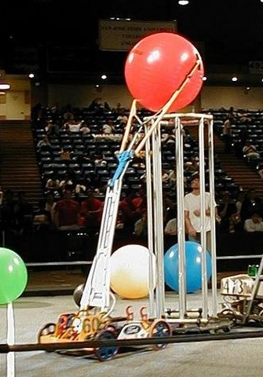
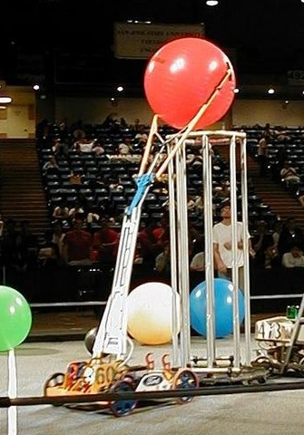

2001 was another incredible year for Team 60. The team attended three events and brought home awards from each of them. At the Southern California Regional, Team 60 was recognized for its robust robot and was given the Quality Award. They placed fourth.
The team next traveled to the Silicon Valley Regional where they won the regional for the second year in a row. Although they didn't seed high, they were chosen by the number 1 seed as the best ball-picking team. In addition to receiving the Regional Winner Award, Team 60 also earned the Imagery Award and the Incredible Play Award.
At National Championship, Team 60 competed in the Curie Division and took top honors as Division Winners. They then proceeded to play on the revered Einstein Field where Team 60 received the Quality Award.
2001 - Diabolical Dynamics. Four teams work together as one alliance to try to achieve as high a score as possible in each match. Points are scored by placing balls in their goal, and by positioning their robots and goals in designated areas at the end of each match. At the start of each match, the alliance station contains twenty small balls. In addition there are twenty small balls and four large balls on the far side of the field which may be used to score points. At the end of the two minute match, points are awarded as follows: the alliance will receive one point for each small ball in the goal and not in contact with a robot, and ten points for each large ball in the goal and not in contact with a robot. Each alliance will receive ten points for each robot that is in the End Zone. An additional ten points will be added if the stretcher is in the End Zone. The alliance doubles its score if the bridge is balanced. The alliance multiplies its score by a factor of up to three by ending the match before the two minute time limit. Each team receives the alliance score. A team multiplies its’ score by 1.1 if its large ball is on top of a goal. Scores are rounded up to the nearest whole point after applying all applicable multipliers.
 
